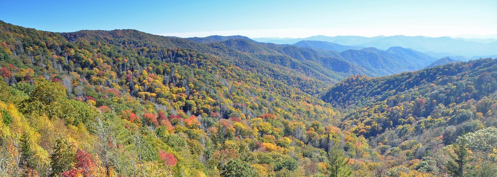
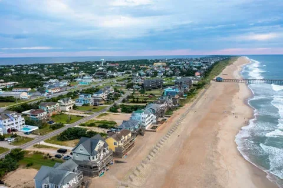
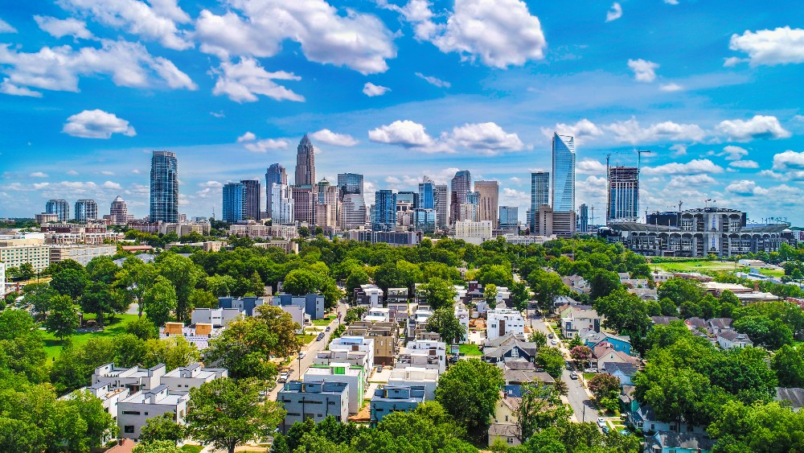

Место, где хочется жить, творить и встречать рассветы
Этот штат привлекает своим невероятным разнообразием природы. Здесь можно всего за несколько часов доехать от величественных туманных гор Аппалачи до бескрайних песчаных пляжей Атлантического океана. Умеренный климат, развитые города и потрясающая экология делают это место идеальным для комфортной и спокойной жизни.

Знаменитые горы Блу-Ридж с их бесконечными лесами и захватывающими дух видами.

Чистейшие пляжи Outer Banks, исторические маяки и шум океанских волн.

Современные, чистые и зеленые города с высоким уровнем жизни и дружелюбной атмосферой.